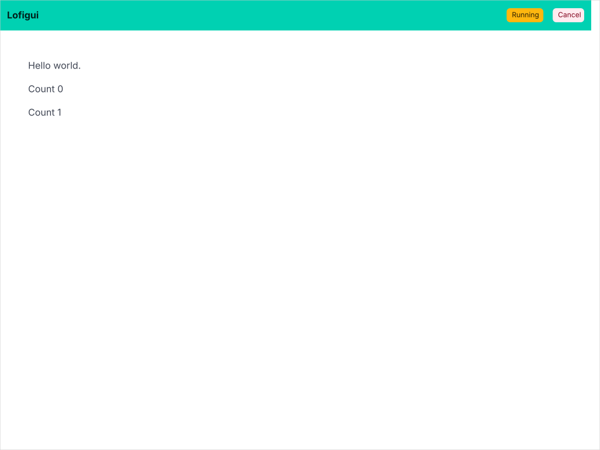
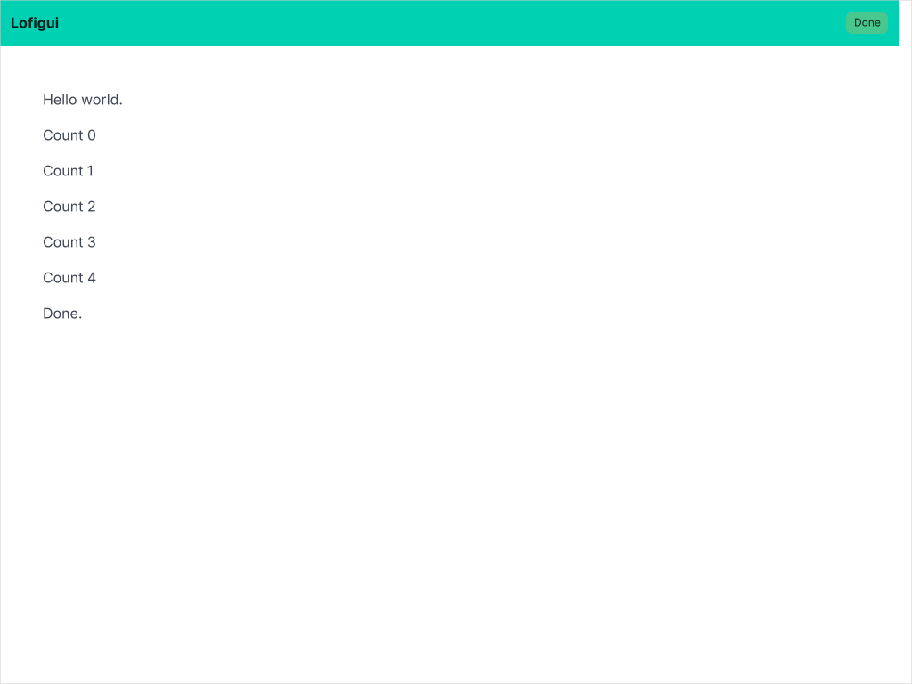

01 — Sparkline
A sparkline is a tiny inline chart — no axes, no labels, no legend. It shows a trend at a glance, designed to sit inside a paragraph or table cell. This is the simplest thing you can build with gogal: generate data, create a chart, render SVG.

➡

The code
The model function generates points one at a time, updating the sparkline after each. Uses lofigui for interactive WASM and server modes:
func model(app *lofigui.App) {
const nPoints = 7
var points []gogal.DataPoint
y := 20.0
for i := range nPoints {
y += rand.Float64()*10 - 5
points = append(points, gogal.DataPoint{X: float64(i), Y: y})
lofigui.Reset()
lofigui.HTML(`<p>Sparkline: ` + renderSparkline(points, false) + `</p>`)
lofigui.HTML(`<p>Smooth: ` + renderSparkline(points, true) + `</p>`)
if i < nPoints-1 {
app.Sleep(500 * time.Millisecond)
}
}
}
Sequential generation — each iteration adds one point, calls
lofigui.Reset() to clear the buffer, then re-renders the sparkline with the growing dataset. The browser polls for updates, showing the chart grow in real time.
app.Sleep() pauses between points. The lofigui framework handles rendering in the browser during the pause, so each intermediate state is visible.
WithSmooth(true) enables Catmull-Rom to Bezier curve interpolation, producing smooth paths instead of straight line segments between points.
Running it
task example:01
Starts the lofigui server at http://localhost:1340. Click Start to generate a random sparkline — watch it grow point by point.
API reference
| Function | Purpose |
|---|---|
gogal.NewLineChart(opts...) |
Create a line chart with functional options |
gogal.WithVariant(gogal.Sparkline) |
Minimal inline chart, no axes/labels/legend |
gogal.WithSize(w, h) |
Set SVG viewBox dimensions |
gogal.WithSmooth(true) |
Enable Catmull-Rom curve smoothing |
chart.Add(name, points) |
Add a named data series |
chart.Render(w) |
Write SVG to an io.Writer |
chart.RenderString() |
Return SVG as a string |